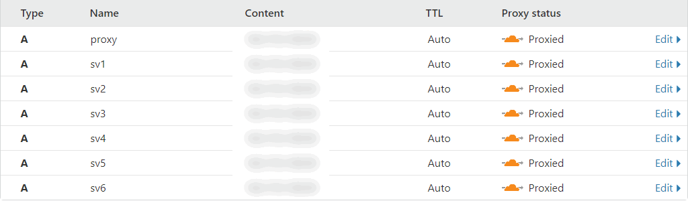
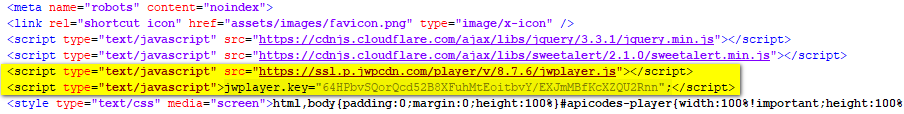

Documentation For APICodes CPanel Version 1.0
If you have any questions that are beyond the scope of this help file, please email our support: support@apicodes.com.
Note: Please don't share or resell for anyone, we need the funds to maintain, develop and support you in the future.
Step 1: Open config.php. Then change the $secret_key to the key you want to log in to CPanel. By default is admin. Like this: https://demo.apicodes.com/cpanel/?login=admin (admin is the secret key).
Step 2: Just upload all the files in the source_cpanel folder onto your server for use. In case, you want to use Google Drive or SoundCloud. You will need additional setup. See the instructions below for know how to do that.
Step 1: You need a VPS / Server with Ubuntu 18.04 installed.
Step 2: Login to your VPS / Server. Then watch the video below to know how to setup Proxy Server.
Step 1: Upload LoadBalancer.zip and ProxyStream.zip onto /root/
Step 2: Run the command bellow.
apt-get update
apt-get install unzip
apt install nginx -y
ufw allow 'Nginx HTTP'
ufw allow 6666
ufw allow 6868
cd /root/
unzip LoadBalancer.zip
cd /root/LoadBalancer
apt install npm -y
apt-get install nodejs -y
npm install pm2 -g
cd /root/LoadBalancer/bin
pm2 start www -i 0 --name LoadBalancer
cd /root/
unzip ProxyStream.zip
cd /root/ProxyStream
apt install npm -y
apt-get install nodejs -y
npm install pm2 -g
cd /root/ProxyStream/bin
pm2 start www -i 0 --name ProxyStream
Step 3:
/root/CodeFolder/models/CacheManager.js => CacheManager.KEY_ENCRYPT => Encryption key
/root/CodeFolder/configs/servers.js => Domain configuration
=> CodeFolder: LoadBalancer and ProxyStream
Step 4: Nginx configuration
upstream LoadBalancer {
server 127.0.0.1:6666;
}
upstream ProxyStream {
server 127.0.0.1:6868;
}
server {
listen 80;
server_name proxy.yourdomain.com;
location / {
proxy_pass http://LoadBalancer;
proxy_http_version 1.1;
proxy_send_timeout 600;
proxy_read_timeout 600;
proxy_set_header Upgrade $http_upgrade;
proxy_set_header Connection 'upgrade';
proxy_set_header Host $host;
proxy_cache_bypass $http_upgrade;
}
}
server {
listen 80;
server_name sv1.yourdomain.com;
location / {
proxy_pass http://ProxyStream;
proxy_http_version 1.1;
proxy_send_timeout 600;
proxy_read_timeout 600;
proxy_set_header Upgrade $http_upgrade;
proxy_set_header Connection 'upgrade';
proxy_set_header Host $host;
proxy_cache_bypass $http_upgrade;
}
}
Step 5: Point domain to IP.

Done!
***API Link: https://yourdomain.com/link/?driveId=0BwHxX3yoJoeuYzZlNm1jYVhwWWs
***Note: If you change anything. Don't forget to run the command: pm2 restart all
Step 3: After setting up the Proxy Server. Go to source_cpanel edit config.php. Then, add your proxy domain that you installed in Step 2.
Step 1: Go to https://soundcloud.com/you/apps. Create an app, then copy Client ID.
Step 2: Go to source_cpanel edit config.php. Then, changes our default Client ID to your Client ID.

By default, our script will use JWPlayer 8. But if you want to use JWPlayer 7. Just open embed.php. Then change:
<script type="text/javascript" src="https://ssl.p.jwpcdn.com/player/v/8.8.6/jwplayer.js"></script>
<script type="text/javascript">jwplayer.key="64HPbvSQorQcd52B8XFuhMtEoitbvY/EXJmMBfKcXZQU2Rnn";</script>
to
<script type="text/javascript" src="https://ssl.p.jwpcdn.com/player/v/7.12.13/jwplayer.js"></script>
<script type="text/javascript">jwplayer.key="LgLP3h9VAPYU1gxeWx2Vb/JbPuUOH0omT0vj4qWYcpAYZmo2";</script>
If you have any questions. Please don't forget contact with us via email: support@apicodes.com. Thanks for reading!
Copyright 2020 © APICodes. All rights reserved.